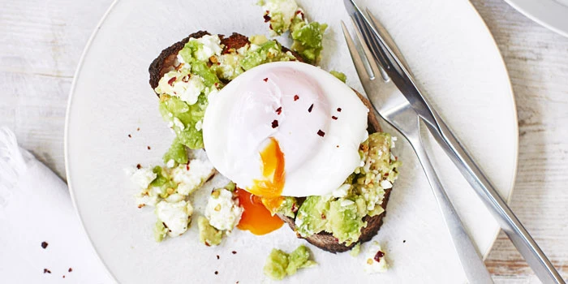

Perfect Poached Egg

Description
Follow the instructions for a perfect poached egg!
Ingredients
Steps
- Make sure your eggs are really fresh. Fresh eggs have a thicker white near the yolk that will better hold a round shape as it cooks. You can tell how fresh an egg is by putting it in a glass of water; if it lies horizontally at the bottom, it is very fresh; if it starts to float or stand on end it is less fresh. If your egg isn’t so fresh, crack it into a small bowl and drain off the runnier white.
- Crack your egg into a bowl or onto a saucer, this makes it easier to slide into the pan. If there is any very runny white surrounding the thicker white then tip this away.
- Add a drop of vinegar (you can add this to the water in the pan if you prefer).
- Bring a pan of water filled at least 5cm deep to a simmer. Don't add any salt as this may break up the egg white.
- Stir the water to create a gentle whirlpool to help the egg white wrap around the yolk.
- Slowly tip the egg into the centre. Make sure the heat is low enough not to throw the egg around – there should only be small bubbles rising.
- Cook for 3-4 minutes or until the white is set.
- Lift the egg out with a slotted spoon and drain it on kitchen paper. Trim off any straggly bits of white. If you need to cook more than one poached egg, keep it at the right temperature in warm water, but make sure the water isn't hot enough to overcook the egg.